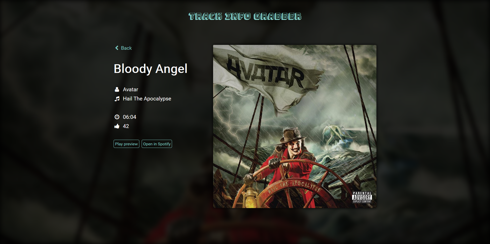

Huh? What is Track Info Grabber?
Okay, let me back up a bit. First, there was Adam and Eve and th- You know what? Let's skip that part, plus not everyone agrees with that.
So, there was this friend of mine that wanted to try using APIs because he never did so (no shame! We all start from the same beginning). He wanted to write a small C# application to fetch information about a music track based on its name.
A few days later, I was writing this simple application that kind of missed the point for him... But that was a way for me to learn and practice Angular 2 with TypeScript. Here we are today :-).
Is it useful?
Well... Not very much indeed. I think of it as my very own little experimentation lab. I play with Angular2, TypeScript and I try to do so building a nice-looking web application, using purely HTML5 and CSS3 -- not even jQuery.
Feel free to check out or fork the code if you'd like. But as it's my learning playground, I won't accept pull request, sorry :-(.
What does it look like?
